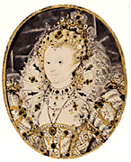

95 RATU ELIZABETH I 1533-1603
Di
sepanjang sejarah Inggris, adalah Ratu Elizabeth I yang
umumnya dianggap raja yang paling terkemuka. Empat puluh
lima tahun pemerintahannya merupakan masa kemakmuran
ekonomi, berkembangnya kesusastraan, dan munculnya Inggris
jadi kekuatan armada laut nomor wahid di atas samudera.
Tatkala Inggris tak lagi punya raja-raja yang menonjol,
muncullah yang mengangkat Inggris ke jaman keemasan.
Elizabeth lahir tahun 1533 di Greenwich, Inggris.
Ayahnya, Raja Henry VIII, perintis babak pembaharuan
Inggris. Ibunya, Anne Boleyn, adalah istri kedua Henry. Anne
dipenggal kepalanya hingga menggelinding bagai sebutir nyiur
tahun 1536 dan beberapa bulan kemudian parlemen keluarkan
pengumuman bahwa Elizabeth yang waktu itu berumur tiga tahun
sebagai "anak sundal." (Ini merupakan sikap umumnya kaum
Katolik Inggris yang tidak menganggap sah perceraian Henry
dengan istri pertamanya). Meski ada kutukan parlemen,
Elizabeth dibesarkan dalam rumah tangga kerajaan dan peroleh
pendidikan baik.
Henry VIII tutup usia tahun 1547 tatkala umur Elizabeth
tiga belas tahun. Sebelas tahun sesudah itu tidak ada
penguasa Inggris yang bisa dianggap berhasil. Edward VI,
saudara tiri Elizabeth naik tahta antara tahun 1547 sampai
1553. Di bawah pemerintahannya, kentara sekali politik pro
Protestannya. Ratu Mary I memerintah lima tahun sesudah itu
mendukung supremasi kepausan dan pengokohan kembali Katolik
Romawi. Selama pemerintahannya kaum Protestan Inggris
diuber-uber dan ditindas, bahkan sekitar tiga ratus
pemeluknya dihukum mati. (Ini menyebabkan ratu dapat julukan
tak sedap: "Mary yang berdarah." Elizabeth sendiri ditahan
dan disekap di Menara London. Kendati akhirnya dibebaskan,
hidupnya dalam beberapa waktu berada dalam ancaman bahaya.
Tatkala Mary tutup usia (tahun 1558) Elizabeth yang sudah
berumur dua puluh lima tahun naik tahta. Kenaikan ini
memberi kecerahan buat penduduk Inggris.
Banyak masalah yang menghalang ratu muda belia ini:
peperangan melawan Perancis; hubungan tegang dengan
Skotlandia dan Spanyol; kondisi moneter pemerintah; dan di
atas segala-galanya itu adalah awan gelap perpecahan agama
yang bergantung di atas kepala Inggris.
Kemelut terakhir ini ditangani lebih dulu. Tak lama
sesudah Elizabeth naik tahta, undang-undang tentang
"Supremasi dan Persamaan" disahkan tahun 1559, menetapkan
Anglican sebagai agama resmi Inggris. Ini memuaskan pihak
kaum Protestan moderat, tetapi kaum Puritan menghendaki
perubahan yang lebih drastis. Meskipun menghadapi oposisi
kaum Puritan di satu pihak dan kaum Katolik di lain pihak,
selama masa pemerintahannya tetap bertahan memantapkan
kompromi yang tertera dalam undang-undang tahun 1559.
Situasi keagamaan menjadi ruwet dengan keadaan yang
berkaitan dengan Ratu Mary dari Skotlandia. Mary dipaksa
meninggalkan Skotlandia dan melarikan diri ke Inggris.
Sesampai di Inggris dia menjadi tahanan Ratu Elizabeth.
Langkah Elizabeth ini bukanlah atas dasar kekerasan dan
semau-maunya: Mary penganut Katolik Romawi dan juga punya
tuntutan yang layak menggantikan tahta Elizabeth. Ini
berarti, andaikata ada pemberontakan atau pembunuhan yang
berhasil, Inggris akan punya lagi ratu beragama Katolik.
Selama penahanan Mary yang sembilan belas tahun itu memang
ada beberapa kali komplotan menghadapi Elizabeth dan ada
cukup bukti keterlibatan Mary. Akhirnya di tahun 1587 Mary
dihukum mati. Elizabeth menandatangani vonis hukuman itu
dengan agak ogah-ogahan. Para menterinya dan umumnya anggota
parlemen menginginkan supaya Mary dibunuh lebih cepat lebih
baik.
Pertentangan agama betul-betul membahayakan Elizabeth. Di
tahun 1570 Paus Pius V mengucilkan dan memerintahkannya
turun tahta; dan di tahun 1580 Paus Gregory XIII
mengeluarkan pengumuman bahwa tidaklah berdosa membunuh
Elizabeth. Tetapi, keadaan juga yang menguntungkan
Elizabeth. Sepanjang masa pemerintahannya, kaum Protestan
tercekam rasa takut terhadap kebangunan kembali Agama
Katolik di Inggris. Elizabeth menampakkan dirinya bagai
perisai menghadapi kebangunan itu. Dan ini merupakan sumber
penyebab pokok kepopulerannya di kalangan massa Protestan
Inggris yang besar itu.
Elizabeth menangani politik luar negeri dengan cermat,
luwes, dan berpandangan jauh. Di awal-awal tahun 1560 dia
merampungkan "Perjanjian Edinburgh" yang menjamin
penyelesaian damai dengan Skotlandia. Perang dengan Perancis
berakhir dan hubungan kedua negara membaik. Tetapi,
angsur-berangsur keadaan memaksa Inggris terlibat
pertentangan dengan Spanyol. Elizabeth berusaha menghindari
perang, tetapi buat Katolik militan Spanyol abad ke-16,
perang antara Spanyol dengan Protestan Inggris sulit
terelakkan. Pemberontakan di Negeri Belanda melawan penguasa
Spanyol merupakan faktor pembantu: pemberontak Belanda
umumnya penganut Protestan dan tatkala Spanyol menggenjot
pemberontak, Elizabeth membantu Negeri Belanda, meskipun
sebenarnya Elizabeth pribadi tak punya gairah berperang.
Umumnya rakyat Inggris seperti juga para menteri dan
parlemen lebih bernafsu angkat senjata daripada Elizabeth.
Karena itu, ketika perang dengan Spanyol akhirnya meletus
juga di tahun 1580an, Elizabeth peroleh dukungan kuat rakyat
Inggris.
Bertahun-tahun Elizabeth secara tekun membangun Angkatan
Laut Inggris; tetapi, Raja Philip II dari Spanyol juga
bergegas membangun armada besar --Armada Spanyol-- untuk
melabrak Inggris. Armada Spanyol punya kapal-kapal yang
hampir seimbang banyaknya dengan kepunyaan Inggris, tetapi
kelasinya lebih sedikit; lebih dari itu, pelaut Inggris
lebih terlatih baik dan kualitas kapal serta persenjataan
meriamnya lebih bagus. Pertarungan pun pecah tahun 1588, dan
pertempuran laut yang seru itu berakhir dengan kekalahan
mutlak pihak Spanyol. Sebagai akibat kemenangan ini, Inggris
menjadi mantap selaku kekuatan Angkatan Laut paling jempol
di dunia, posisi yang tetap dipegangnya hingga abad ke 20
ini.
Elizabeth senantiasa cermat dalam soal keuangan. Di
awal-awal pemerintahannya kondisi keuangan kerajaan Inggris
sungguh sehat. Tetapi-tentu saja cekcok dengan Spanyol
meminta biaya mahal dan di akhir pemerintahannya keadaan
keuangannya amat miskin. Tetapi, kendati kerajaan miskin,
keadaan negara secara keseluruhan berkondisi lebih makmur
ketimbang pada waktu Elizabeth melekatkan mahkota di
ubun-ubunnya.
Pemerintahan Elizabeth selama empat puluh lima tahun
(dari tahun 1558 sampai 1603) sering dianggap "Jaman
keemasan Inggris." Beberapa penulis termasyhur Inggris,
termasuk William Shakespeare, hidup di jaman itu.
Jelas-jelas Elizabeth punya saham dalam perkembangan
kultural ini. Dia beri semangat teater Shakespeare
menghadapi oposisi pemerintahan lokal kota London. Tetapi,
tak ada perkembangan musik atau lukisan yang bisa menandingi
perkembangan kesusastraan.
Era Elizabeth juga menyaksikan bangkitnya Inggris selaku
penjelajah. Ada berulang kali perjalanan ke Rusia dan
percobaan-percobaan oleh Martin Frobisher dan oleh John
Davis mencari jalan arah barat laut menuju Timur Jauh. Sir
Francis Drake berlayar keliling dunia (dari tahun 1577
hingga 1580), menjejakkan kaki di California dalam
perjalanan itu. Juga ada percobaan yang gagal (oleh Sir
Walter Raleigh dan lain-lainnya) mendirikan pemukiman di
Amerika Utara.
Kekurangan Elizabeth terbesar mungkin ogah-ogahan
menyediakan peluang buat pergantian tahtanya. Bukan saja dia
tak pernah kawin, tetapi dia selalu menghindari menetapkan
penggantinya. (Mungkin karena dia takut, jika dia tunjuk
seseorang jadi penggantinya akan segera jadi rivalnya). Apa
pun alasan Elizabeth tidak mau menyebut penggantinya, kalau
saja dia mati muda (atau kapan saja sebelum matinya Mary
dari Skotlandia), Inggris mungkin sudah kecemplung dalam
kancah perang saudara sesudah penggantian. Nasib baik buat
Inggris, Elizabeth hidup sampai umur tujuh puluh tahun. Di
atas tempat tidur menjelang rohnya melayang, dia sebut Raja
James II dari Skotlandia (putera Mary dari Skotlandia)
menjadi penggantinya. Meskipun ini berarti persatuan antara
Inggris dan Skotlandia di bawah satu mahkota, ini merupakan
pilihan yang membingungkan. Baik James maupun puteranya
Charles I terlampau otoriter buat selera Inggris, dan di
abad tengah perang saudara pun meledaklah.
Elizabeth punya kecerdasan yang melebihi orang biasa dan
seorang politikus yang cakap, tegas, punya pandangan luas.
Berbarengan dengan itu dia punya kehati-hatian dan
konservatif. Dia mengidap ketidaksukaan berperang dan
pertumpahan darah meskipun jika diperlukan dia bisa
bersiteguh. Seperti halnya ayahnya, dia menjalankan
pemerintahan dengan kerjasama parlemen dan bukan melawannya.
Karena dia tidak kawin, maka tampaknya dia masih perawan
seperti dikemukakannya di muka umum. Tetapi, tidaklah pula
terlalu benar jika dianggap dia itu termasuk jenis perempuan
pembenci lelaki. Malah sebaliknya, dia jelas menyukai pria
dan gemar bergaul dengannya. Elizabeth punya kemampuan
memilih menteri-menterinya yang becus. Sebagian dari
hasil-hasil yang dicapainya antara lain berkat Williarn
Cecil (Lord Burghley), yang menjadi penasihat utamanya sejak
tahun 1558 hingga matinya di tahun 1598.
Pokok-pokok keberhasilan Elizabeth bisa diringkas sebagai
berikut Pertama, dia memimpin Inggris selama tahap kedua
jaman pembaharuan tanpa pertumpahan darah yang berarti.
(Berbeda dengan Jerman di mana tiga puluh tahun perang
(1618-1648) membunuh lebih dari dua puluh lima persen
penduduk, sungguh menyolok). Selain dia, meredakan rasa
benci keagamaan antara Katolik Inggris dan Protestan
Inggris, dia berhasil pula menjaga persatuan bangsa. Kedua,
empat puluh lima tahun pemerintahannya --Era Elizabeth--
umumnya dianggap jaman keemasan suatu bangsa besar di dunia.
Ketiga, adalah juga di masa pemerintahannya Inggris muncul
selaku kekuatan pokok, posisi yang bisa dipertahankannya
berabad berikutnya.
Kedudukan Elizabeth di dalam daftar urutan buku ini punya
keluar biasaan yang jelas. Pada pokoknya, buku ini merupakan
daftar para inovator besar, orang-orang yang mengedepankan
gagasan-gagasan baru atau membawa perubahan sesuatu keadaan.
Elizabeth bukanlah seorang pembaharu, bukan seorang
inovator, dan garis kebijaksanaan politiknya umumnya
berhati-hati dan konservatif. Kendati begitu, banyak
kemajuan terjadi di masa pemerintahannya dibanding umumnya
penguasaa yang dengan sadar menghendaki kemajuan.
Elizabeth tidak mencoba berhubungan langsung dengan
persoalan gawat yang merupakan urusan wewenang parlemen dan
kerajaan. Tetapi, dengan cara hanya menjauhi diri menjadi
seorang despot, dia mungkin jadi pendorong utama hidupnya
demokrasi di Inggris daripada dia mengumumkan sebuah
konstitusi demokratis. Elizabeth tidak mencari kehebatan
bidang militer dan pula tidak berminat membangun suatu
empirium besar. (Memang, di bawah Elizabeth, Inggris
tidaklah punya tanda-tanda sebuah empirium). Kendati begitu,
dia mewariskan Inggris Angkatan Laut terkuat di dunia dan
meletakkan dasar-dasar empirium Inggris yang menyusul
kemudian.
Kebesaran empirium seberang lautan Inggris diperoleh
sesudah matinya Elizabeth, paling tidak sebagian terbesamya.
Banyak orang yang memainkan peranan penting pembentukan
empirium Inggris yang dalam beberapa hal bisa dianggap
sebagai hasil wajar ekspansi Eropa secara umum dan kedudukan
geografis Inggris. Haruslah pula dicatat bahwa banyak negara
Eropa lain yang berpantaikan Samudera Atlantik (Perancis,
Spanyol dan bahkan Portugis) juga membangun empirium
besar.
Lagi pula, peranan Elizabeth mempertahankan Inggris dan
ancaman Spanyol mudah dilebih-lebihkan. Jika dikaji,
tidaklah tampak Spanyol itu pernah merupakan ancaman serius
terhadap kemerdekaan Inggris. Haruslah diingat, pertarungan
antara armada Inggris lawan armada Spanyol sama sekali tidak
terlalu berlangsung secara jarak dekat. (Tak satu pun
Inggris kehilangan kapalnya!). Dan lebih jauh dari itu,
bahkan andaikata Spanyol berhasil mendaratkan pasukan di
Inggris, sukarlah dibayangkan mereka dapat menaklukkannya.
Angkatan bersenjata Spanyol tidak pernah mencapai kemenangan
yang mengesankan di mana pun di Eropa. Jika Spanyol tidak
mampu menumpas pemberontakan di negeri Belanda, jelaslah tak
ada potongan dia bisa menaklukkan Inggris. Menjelang abad
ke-16, nasionalisme Inggris jauh lebih kuat dari kemungkinan
Spanyol bisa menaklukkannya.
Lantas di mana Elizabeth mesti ditempatkan di daftar buku
ini? Dasarnya dia tokoh lokal. Jika dibandingkan dengan
Peter yang Agung dari Rusia tampaknya tak setara. Ditilik
dari sudut fakta jelas Peter jauh lebih inovatif ketimbang
Elizabeth. Saya akan peroleh kesulitan meyakinkan orang
Rusia yang punya pikiran jernih bahwa Elizabeth ditempatkan
lebih tinggi dalam urutan dari Peter. Sebaliknya, diukur
dari pentingnya peranan yang dimainkan Inggris dan orang
Inggris di abad-abad sesudah Elizabeth adalah suatu
kesalahan menempatkannya terlampau jauh di belakang Peter.
Dalam banyak hal, tampaknya jelas hanya sedikit raja-raja
dalam sejarah punya keberhasilan sebanyak Elizabeth.
|